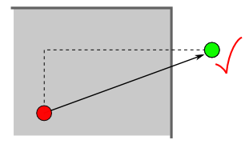
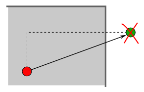
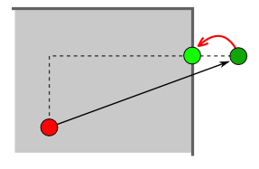
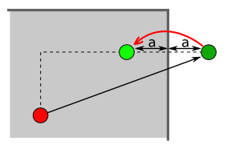
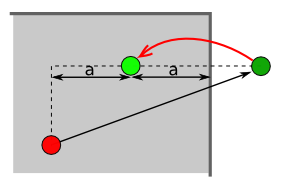
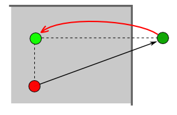
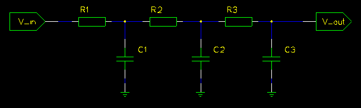
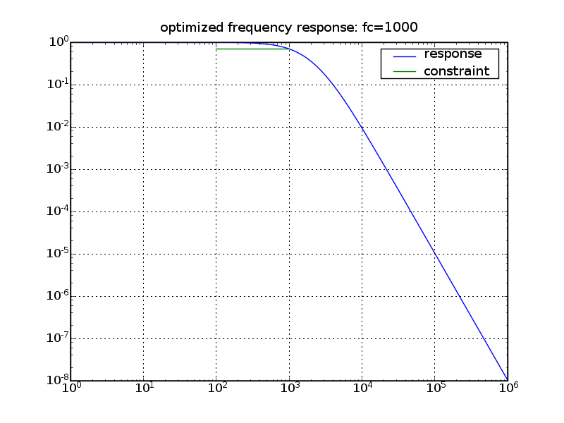
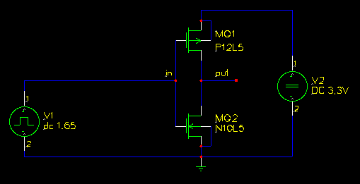
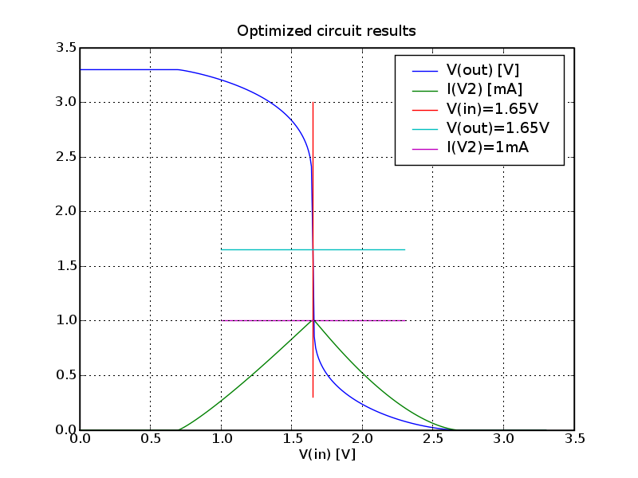

This page describes the neccessary glue code between the
simulator and the optimizer and the changes made in the optimizer
code.
Note: This page is mostly a ported version of the
octave version of that optimization tool.
controller file: setup of variable ranges and simulation setup, prepare a spice template file
DE-solver: generate populations, feed the cost function with test vectors
cost function: call all spice routines and return a cost value
* create spice input file out of the test vector and the prepared template file
* invoke spice simulator with that input file
* read the spice result file
* calcutale the cost of the test vector
Sometimes this is not allowed, for example infinite high capacitance values or stripline impedances larger than 377 Ohms. That's why either the DE solver or the cost-function needs to handle that case. Moving that boundary problem handling into the DE solver, it has to be written only once.
I've added different boundary modes:
|  | Mode "accept": same behaviour as before, don't mind the given boundaries |
|  | Mode "reject": reject boundary violations and throw away that test vector. This is the same as applying a very high cost for boundary violations, but there's no need to run the cost loop. |
|  | Mode "limit": if one element of the test vector is outside it's
boundaries, put it back onto the boundary. This mode is not recommend. It leads sometimes to a situation in which one element in the whole population get caught onto one of it's boundaries |
|  | Mode "mirror": push the elements that are outside the boundaries back into the boundaries. |
|  | Mode "halfway": if the element is outside, place it between the boundary and it's value of the previous population. |
|  | Mode "old": if the element is outside it's boundaries, use the value of the previous population. |
On the other hand, the "limit", the "halfway" and the "old"mode introduces new population members that are not really a result of the DE algorithm. I think the "mirror" mode is a good compromise.

Below the cutoff frequency the signal level at the output has to be above 1/sqrt(2) = 0.707. This is the constraint for a lowpass filter. The cutoff frequency is defined inside the cost function. For every simulation point that violates that constraint I sum up a high penalty, e.g. 10000.
We can optimize the parameters to make the signal above the cutoff frequency as low as possible. As cost function I just sum up the amplitudes of the frequency response values.
Note: As the constraint cost is much higher than the optimization cost, the optimizer will first fullfil the constraint and after that start the optimization.
All part values have predefine value ranges. Usually nobody uses large capacitances or very small resistance values.
In this case I'm limiting the resistors to be within [1k, 1Meg] and the capacitors to be within [1n, 1m].
Here are some lines of the optimization progress:
Cost=70002.3027081 R1=10684.1371475 C1=1.93643712102e-09 R2=15536.815035 C2=1.68366267757e-09 R3=2693.14935793 C3=1.26876179293e-08 Cost=4.06837082098 R1=4398.38527776 C1=1.64888812845e-08 R2=14943.2836622 C2=1.82707929182e-09 R3=83876.8799919 C3=1.072487268e-09 Cost=3.88094508664 R1=1036.18310711 C1=7.95552119758e-08 R2=11537.5172909 C2=5.37857949595e-09 R3=43837.1598652 C3=1.3760375286e-09 Cost=3.84909610278 R1=1134.67447980 C1=8.97034728485e-08 R2=6576.31513635 C2=4.73812459977e-09 R3=55667.6648823 C3=1.40779526549e-09 Cost=3.76639884342 R1=1122.07623199 C1=8.11932936113e-08 R2=4088.0159719 C2=1.06726451014e-08 R3=80433.2996618 C3=1.00101253774e-09 Cost=3.71183999826 R1=1069.47716112 C1=6.42777099034e-08 R2=9268.07088605 C2=7.24604889723e-09 R3=76260.5887205 C3=1.06583325788e-09 Cost=3.69388070510 R1=1017.87785103 C1=8.10617176776e-08 R2=8981.15083546 C2=7.22417325942e-09 R3=67977.1743484 C3=1.04888063355e-09 Cost=3.69081629533 R1=1014.44623487 C1=7.95027461874e-08 R2=9100.78981351 C2=6.71567076719e-09 R3=73983.1264468 C3=1.04581368616e-09 Cost=3.68303543502 R1=1000.16881963 C1=7.41487072167e-08 R2=8323.23244294 C2=7.73334254763e-09 R3=80911.5187087 C3=1.00579744771e-09 Cost=3.68211822426 R1=1010.84186288 C1=7.6963333613e-08 R2=7678.36931402 C2=8.13346263126e-09 R3=79245.7745199 C3=1.00646430161e-09 Cost=3.68106867093 R1=1000.17934564 C1=8.1358949957e-08 R2=8425.36640751 C2=7.29135349012e-09 R3=77022.7920231 C3=1.00493508715e-09 Cost=3.68029946425 R1=1001.38866203 C1=8.01662010465e-08 R2=8034.6577371 C2=7.87625904453e-09 R3=76381.4257594 C3=1.00258855054e-09 Cost=3.68003743728 R1=1000.78414983 C1=7.93319677418e-08 R2=8034.6577371 C2=7.71841662038e-09 R3=78445.2927833 C3=1.00497469136e-09 Cost=3.67955126889 R1=1000.53560002 C1=7.80756008968e-08 R2=7852.15474224 C2=8.00201081283e-09 R3=79229.6472378 C3=1.00069795789e-09 Cost=3.67932877576 R1=1000.37200527 C1=7.89047880394e-08 R2=7856.81348501 C2=8.00133591167e-09 R3=78431.6332883 C3=1.00022854478e-09 |
And the result of the optimisation: 

The result of the optimization looks like this:
 Here are some value sets of an optimisation run:
Cost: 0.712772709165 M2_Width: 0.000235253801941 M1_Width: 0.000255501193163 M1_Length: 8.126662417e-06 M2_Length: 2.14074743184e-06 Cost: 0.364576186552 M2_Width: 0.000318908760034 M1_Width: 0.000122630335629 M1_Length: 4.97696828764e-06 M2_Length: 2.85518963381e-06 Cost: 0.250604774773 M2_Width: 0.000318908760034 M1_Width: 0.000123338096165 M1_Length: 4.97696828764e-06 M2_Length: 2.85518963381e-06 Cost: 0.0851454540763 M2_Width: 0.000470169059702 M1_Width: 0.000191289367377 M1_Length: 7.72991148524e-06 M2_Length: 4.0323442648e-06 Cost: 0.0851454540763 M2_Width: 0.000470169059702 M1_Width: 0.000191289367377 M1_Length: 7.72991148524e-06 M2_Length: 4.0323442648e-06 Cost: 0.0394407256895 M2_Width: 0.000481601135445 M1_Width: 0.000230912298186 M1_Length: 8.66825412584e-06 M2_Length: 3.87915357934e-06 Cost: 0.0394407256895 M2_Width: 0.000481601135445 M1_Width: 0.000230912298186 M1_Length: 8.66825412584e-06 M2_Length: 3.87915357934e-06 Cost: 0.0394407256895 M2_Width: 0.000481601135445 M1_Width: 0.000230912298186 M1_Length: 8.66825412584e-06 M2_Length: 3.87915357934e-06 |
programming language: python
natural language: english
licence: the DE-solver has a BSD-like licence, please read the
head of the src/diffev.py file. The spice import filter
src/spice_read.py uses GPL2 all other files and examples are released
into public domain.
download: python_spice-0.0.3.tar.gz